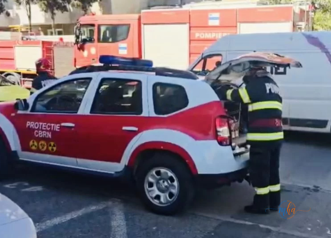
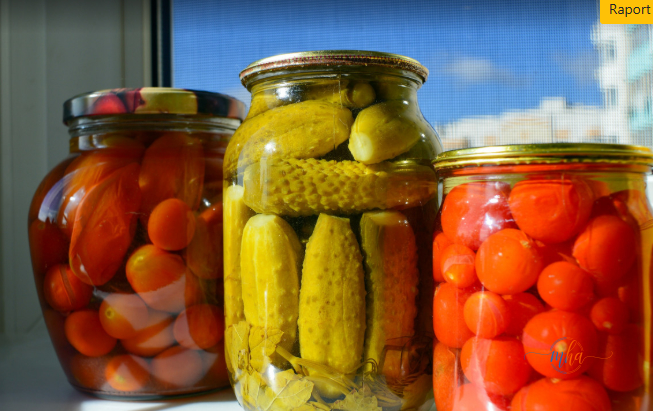

Mehedinți, 8 aprilie 2026. Totul a început cu un apel la 112 care ar fi trezit adrenalina oricui: „explozie într-un apartament!". Imediat, mașinăria de urgență s-a pus în mișcare — patru autospeciale de pompieri, echipele de gaze, tot personalul pregătit pentru scenariul cel mai sumbru. Tensiune, sirene, blocul evacuat mental de toți vecinii curioși lipiți de geamuri.
Realitatea, însă, nu se potrivea deloc cu fiorul dramatic al apelului.
Un dulap de bucătărie, doi infractori în borcane și o țigară uitată
La fața locului, pompierii au dat peste o scenă pe care nu o găsești în niciun manual de intervenție: un dulap de bucătărie avariat, o băltoacă de zeamă de murături curgând nestingherit pe parchet și doi bani de dramă autentică. Niciun incendiu, niciun gaz, nicio explozie în sensul clasic al cuvântului.
Ancheta rapidă a scos la iveală întregul tablou al tragediei. Vinovatele principale: două borcane de murături care fermentaseră cu o pasiune demnă de mai bine. Contextul care le-a dat aripi: o țigară uitată aprinsă pe terasă, un material textil care a luat foc în liniște și, la un moment dat — bum! — finalul neașteptat al unei povești cu varză, castraveți și mult prea multă presiune acumulată.

Femeia de 75 de ani care a sunat la pompieri
Proprietara apartamentului, o femeie de 75 de ani, a auzit zgomotul sec al borcanelor care cedau și a tras concluzia cea mai firească pentru un om singur la o asemenea oră: locuința i-a sărit în aer. Speriată, a sunat imediat la 112 și a descris ce credea că se întâmplă — o explozie. Mobilizarea a fost pe măsura relatării.
„A crezut că blocul se dărâmă. De fapt, castraveții au câștigat lupta cu capacul."
Din fericire, nimeni nu a fost rănit. Pompierii au verificat minuțios întregul apartament, au confirmat că nu există niciun pericol real și au plecat cu... o poveste pe care cu siguranță o vor spune la ani de zile. Singurii care au suferit pierderi irecuperabile în această zi au fost murăturile, care și-au dat ultima suflare undeva între dulapul de bucătărie și parchetul din față.
📜 Dosarul cauzei, pe scurt
- 🚨 Apel 112: explozie într-un apartament din Mehedinți
- 🚒 Intervenție: 4 autospeciale pompieri + echipe gaze
- 🔥 Cauza reală: țigară uitată aprinsă pe terasă → material textil aprins → presiune acumulată în borcane
- 👑 Vinovații: 2 borcane cu murături, fermentație excesivă
- 🤮 Pagube: un dulap de bucătărie avariat, zeamă de murături pe parchet
- 🩹 Victime umane: niciuna
- 💀 Victime alimentare: toate murăturile implicate
Lecția zilei în Mehedinți
Dincolo de latura comică a întregii povești, cazul ridică și un semnal de alarmă cât se poate de serios: țigările uitate aprinse reprezintă o cauză frecventă de incendii, iar reacția rapidă a femeii de 75 de ani — chiar dacă „explozia" s-a dovedit a fi de natură vegetală — a fost exact ce trebuia făcut. Sunați la 112 întotdeauna când credeți că există un pericol. Pompierii preferă să intervină degeaba de o sută de ori decât să nu fie chemați când contează.
Cât despre borcane — depozitați murăturile la temperaturi constante, departe de surse de căldură. Fermentația și căldura fac o echipă explozivă, la propriu.

Redacția MehedintiAzi.ro mulțumește ISU Mehedinți pentru promptitudine și... simțul umorului involuntar al zilei.